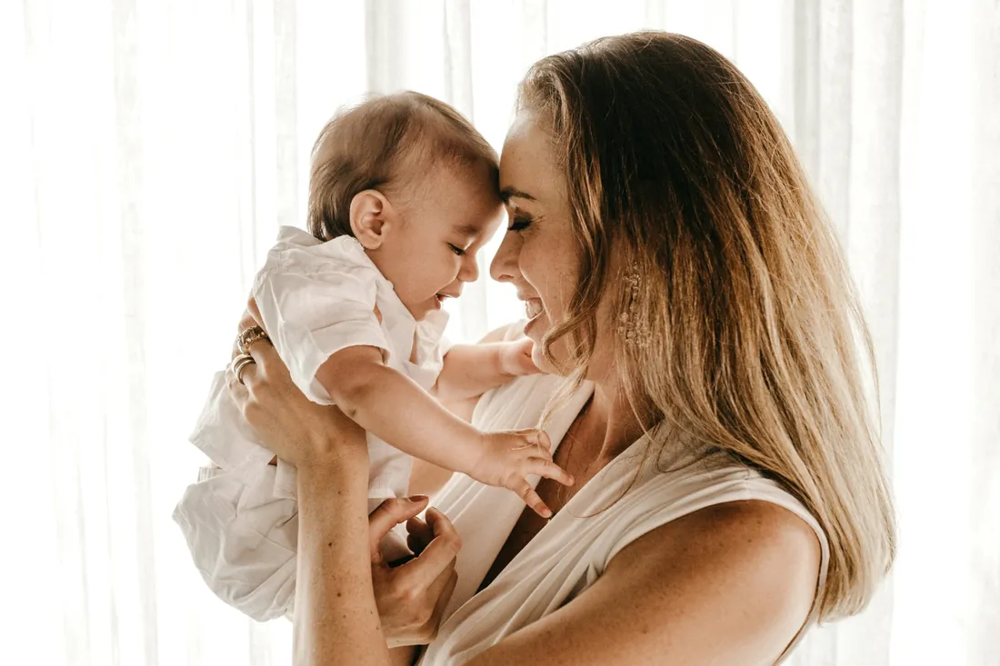
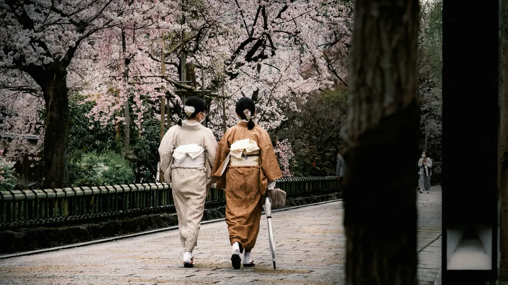

Journal App & Private Photo Diary for iPhone
Stillkeep is a private photo journal app for iPhone that brings photographs, personal stories and the chapters of your life together. Keep a quick photo diary, write longer reflections or build a memory journal that grows with you.
A camera roll remembers what something looked like. A journal remembers what it meant.
Stillkeep connects the two.
Create a Moment with a photo, note or both. Group related Moments into Eras, tag people and places, find past entries with search and rediscover favourite memories with Look Back.
Use it as a daily diary, travel journal, family memory keeper or digital scrapbook — without having to maintain a perfect writing streak.
A Journal App for Photos, Writing and Memories
A photo can show the scene, but not always the story. Stillkeep keeps pictures and words together, so you can remember what happened and why it mattered.
Save the birthday cake, the view from a train, a new home or an ordinary Tuesday. Give each memory a photo, a few lines, or a more detailed entry.
Add the details a camera cannot capture: who was there, what made you laugh, where you went, how you felt and what you want to remember.
Whether you call it a visual diary, photo diary with notes or memory journal, the idea is simple: keep the story beside the picture.
A Private Diary for Everyday Life
Your most meaningful memories are not always the biggest events.
Coffee with a friend, a walk with your dog, a family dinner or a familiar street can become surprisingly precious with time.
Use Stillkeep for small everyday entries as well as milestones. Capture the moment, add one detail and move on with your day.
Journal daily, weekly or whenever you want. Your personal diary should fit your life, not the other way around.
A journal does not need a perfect routine to become valuable. It needs memories worth returning to.
A Journal App Without the Pressure of Daily Journaling
A journal should make remembering easier, not create another task on your to-do list.
You can write every day, but you do not have to.
Save one photo with a sentence today, several Moments on holiday and nothing at all next week. The memories you choose are more important than an unbroken streak.
If you are new to journaling, start with something you already do: take a picture. Then add the part of the story only you know.
There is no minimum amount a memory needs to deserve keeping.
Organise Your Life Into Journal Chapters
Instead of one endless timeline, give important parts of your life a place of their own.
Think university, a new home, a relationship, your baby’s first year, a year abroad or simply a summer you never want to forget.
In Stillkeep, these chapters are called Eras.
Add photos and notes as Moments within each Era, so the experiences from that chapter stay together and are easy to revisit.
Create Eras around people, places, years, trips, relationships, families, hobbies, projects, goals, milestones or major changes.
Instead of one endless diary timeline, your journal becomes a collection of meaningful chapters.
Travel Journal and Photo Travel Diary
Turn a trip into more than a folder of holiday photos. Stillkeep works as a travel journal for city breaks, road trips, honeymoons, backpacking adventures and weekends away.
Photographs show the places. Your travel diary remembers the tiny details: the food you ordered, the unexpected detour, the people you met and the moment you felt at home somewhere new.
Create an Era for your trip, then add a Moment whenever there is a story worth keeping.
Whether you call it a vacation journal, trip diary or digital travel scrapbook, you will come home with the pictures and their stories together.
Years later, you can remember more than the destination. You can remember the experience.
Family Journal and Family Memory Keeper

Family photos multiply quickly. The stories behind them are much easier to lose.
Save the birthdays and holidays, but also Sunday lunches, a grandparent’s favourite saying and the ordinary afternoons that make a family feel like yours.
A family photo journal keeps those details with the people and pictures they belong to.
Create Eras for family years or traditions, and tag the people and places you want to find again.
Use Stillkeep as a private family diary, family photo journal, family memory app, digital family scrapbook, family history journal or personal archive for photographs and stories you want to keep.
Baby Journal and Childhood Memory Diary
Children change so quickly that even last month can feel far away.
Keep the first smile, first steps and birthdays — and the sleepy mornings, funny phrases and small routines between them.
A baby photo journal is not just a list of milestones. It can be a record of everyday childhood, told in photographs and a few heartfelt words.
Create a “Baby’s First Year” Era and add Moments as life happens. There is no need to write a full entry every day.
Stillkeep can become a baby diary with photos, pregnancy memory journal, first-year journal, parenting diary, childhood memory journal or digital baby scrapbook.
The photograph preserves how the moment looked. Your words preserve everything else.
Relationship, Couples, Wedding and Anniversary Journal
The story of a relationship is made of big occasions and beautifully ordinary days.
Preserve first dates, favourite restaurants, concerts, trips, moving in, engagements, weddings and the little jokes only the two of you understand.
An Era can hold the photos, notes and memories from your time together.
Use it as a couples journal, wedding diary or anniversary memory book — whichever chapter you want to remember.
Instead of keeping relationship memories scattered across messages and camera rolls, photographs and their stories can live together.
University, School and Student Journal

One day, those late-night conversations and familiar campus walks will feel like another lifetime.
Keep photographs of friends, student nights, societies, first flats, graduation and the moments in between.
Create an Era for your university or school years, then add stories as they happen.
Your student photo journal becomes more than a highlights reel: it is a record of the people and places that shaped you.
Years later, names and details fade. Writing them down gives photographs their context back.
Career, Project and Achievement Journal
Not every journal has to be about feelings. It can also show what you have built.
Document a creative project, career change, first business, renovation, training goal or hard-won qualification.
Use photographs to track progress and short notes to remember decisions, setbacks and breakthroughs.
Over time, those small updates become a project journal and a record of how far you have come.
Looking backward can reveal progress that was difficult to notice while living through it.
Moving House and New-Chapter Journal
Big changes often happen in a blur.
A new city, first home, career move or beginning of a relationship can be worth documenting before the details fade.
Create an Era for the transition. Keep pictures of the places, people and firsts that make this chapter different.
Years later, those entries can remind you not just where you ended up, but how it all began.
Gratitude Journal and Reflection Diary
Gratitude can begin with a real moment rather than a blank page.
A warm meal, a kind message, a finished project or an ordinary walk can make a thoughtful journal entry.
Choose a photograph and write one sentence about what you appreciated or learned.
It is a simple way to build a gratitude journal and revisit the good things you might otherwise overlook.
Stillkeep can therefore work as a gratitude journal with photos, reflection journal, visual gratitude diary, mindfulness journal or personal record of meaningful moments.
Over time, your journal becomes a map of what mattered to you.
Journal for Memories and Life Events
Sometimes you do not want another diary habit. You just want to remember your life.
Save weddings, graduations, birthdays, friendships, concerts, family traditions, new homes and the moments that do not fit neatly into a category.
Keep a photograph with its story so your personal memory journal grows naturally over time.
You decide what deserves a place in your own history.
Add Notes and Stories to Photos
Have you ever found an old photo and wondered where it was taken or who was there?
Photos capture what you saw. A few words can preserve the conversations, feelings and details that are invisible in the image.
Add a caption, short note or longer story to each Moment.
That context turns a collection of pictures into a photo journal you can actually understand years later.
That makes it useful for people looking for an app to add notes to photos, write memories beside pictures, save captions with personal photographs, document the story behind a photo or create a photo journal containing more than images.
An Alternative to an Endless Camera Roll
Your camera roll is good at collecting images. It is not designed to explain why they matter.
Important memories sit alongside screenshots, duplicates and photos you took only to remember something for a day.
Stillkeep complements your photo library rather than replacing it.
Choose the photos with a story, add context and organise them into Eras. Keep less noise and more meaning.
Instead of keeping every photograph, keep the meaning behind the ones that matter.
An Alternative to a Paper Diary
A notebook is personal and satisfying. A digital photo diary offers a different kind of freedom.
Your iPhone pictures can sit directly beside your writing, and you can search old entries instead of flipping through years of pages.
Stillkeep keeps the reflective part of journaling without requiring a long handwritten entry.
If you love paper diaries, you can still use them. This is simply another way to keep memories that include photographs.
You still write your story. The difference is that the photographs can live beside it.
Search Old Journal Entries and Memories
The longer you keep a journal, the more useful it becomes to find things again.
Search Stillkeep Moments and use tags to bring together people, places and themes.
Look up a friend’s name, a city or a favourite trip when you want to revisit it.
Your photo diary should become easier to explore as it grows, not another archive you forget about.
Tags for People, Places, Events and Themes
One memory can belong to several parts of your life.
A holiday picture might also be about your best friend, a favourite place and a special anniversary.
Tags help those connections stay findable without forcing every Moment into a single category.
Use Eras for the bigger chapter and tags for the people, places and themes within it.
That creates multiple paths back to the same memory.
Rediscover Forgotten Memories With Look Back
Some of the best journal entries are the ones you have forgotten you wrote.
Stillkeep’s Look Back feature brings earlier Moments back into view.
Revisit a trip, an old friendship, an ordinary family afternoon or a version of your life that feels unexpectedly distant.
A personal photo journal should not just store memories — it should help you enjoy them again.
A Personal Memory Archive
A single entry is a memory. Years of entries can become a personal history.
Imagine looking back at the places you lived, the people you loved and the chapters that changed you.
Stillkeep lets you build that photo-and-story archive one Moment at a time.
You do not need to know now which details your future self will treasure. Give them enough context to remember.
A Private Journal App for iPhone
Your memories can be deeply personal. Privacy deserves more than a passing mention.
Stillkeep is designed as a private iPhone journal with iCloud-based syncing. Its published privacy documentation describes an approach without third-party advertising or analytics SDKs.
If you are choosing a private photo diary, read the app’s privacy information to understand how your journal is stored and handled.
A personal journal should feel personal — not like a social feed.
Journal Across Apple Devices
Your memories should not be tied to the lifespan of a single phone.
Stillkeep uses iCloud within the Apple ecosystem to keep your journal connected.
If you use Apple devices, review the app’s supported-device and iCloud requirements before getting started.
Export a Journal as a PDF
Some chapters of your life deserve to become keepsakes you can hold on to outside an app.
Stillkeep supports exporting complete Eras as formatted PDFs and individual Moments as Photocards.
Turn a trip into a travel keepsake, preserve a child’s first year or save a collection of memories from university.
PDF export makes your journal easier to share or preserve in a separate format.
Simple answers to the questions people ask before starting a photo diary.
What Is a Photo Journal App?
A photo journal app lets you pair pictures with written memories in one place.
Unlike a camera roll, which stores images, a photo diary also records the story: who was there, what happened and why the moment mattered.
In Stillkeep, each photo-and-story entry is called a Moment.
What Is the Difference Between a Diary and a Journal?
A diary usually records events as they happen. A journal may also explore thoughts, feelings, ideas and reflections.
The terms overlap, so there is no need to choose just one.
With Stillkeep, you can record what happened, explain what it meant or simply save a photograph with a few words.
Write what happened. Write what it meant. Or simply save the photograph and enough words to remember.
How Do I Keep a Diary With Photos?
Choose a picture that captures something you want to remember, then write down the details while they are fresh.
Add who was there, where you were, what happened and anything the image alone cannot tell.
In Stillkeep, save it as a Moment and group related entries into an Era.
How Can I Save the Story Behind My Photos?
Put the story beside the photo, rather than hoping you will remember it later.
Capture names, places, conversations and feelings in a quick caption or longer journal entry.
Together, the photograph and writing become a memory you can return to.
How Can I Organise My Life Memories?
Start with chapters that make sense to you: a trip, a relationship, a family year or a new beginning.
In Stillkeep, those chapters are Eras. Individual photo-and-story entries are Moments.
What App Can I Use to Record My Life?
A personal journal app can combine a diary, photo journal, memory keeper and life log.
If you want pictures and personal stories to stay together, Stillkeep is built around photo-and-text Moments organised into Eras.
How Do I Start Journaling If I Hate Writing?
Start with a picture you like. Write one sentence about why you took it.
You do not need polished prose, pages of reflection or a daily streak.
“We got caught in the rain and laughed all the way home” is enough to turn a photo into a memory.
One photograph plus one meaningful sentence is already a record your future self would not otherwise have.
Do I Need to Journal Every Day?
No. A photo journal can be daily, weekly or completely occasional.
You might write several Moments on a holiday and none the following month.
The aim is to capture stories that matter, not to complete a streak.
Consistency can be useful. Meaning matters more.
How Do I Remember More of My Life?
Add context to photos while memories are still fresh.
Names, places, feelings, conversations and tiny details are often what make an image meaningful years later.
Organise your entries and revisit them occasionally to reconnect with those experiences.
How Can I Stop Important Photos Getting Lost in My Camera Roll?
Do not try to give every image equal attention.
Pick photos with a story and save them in a dedicated photo journal with short notes.
Stillkeep lets you create a more intentional collection alongside your everyday camera roll.
What Can I Write in a Personal Journal?
Try a memory from today, a travel story, something funny someone said, a milestone, a difficult feeling or a small thing you appreciated.
If you are stuck, answer three questions: What happened? Why did it matter? What would I like to remember?
Who Is Stillkeep For?
Stillkeep is for anyone who wants to remember more than a photograph can show.
Travellers can capture journeys; parents can remember childhood; couples can keep shared stories; students can document university life.
You do not need to consider yourself a writer. A photo and a few honest words are enough.
One App, Many Kinds of Journal
Your journal can change with your life.
Use Stillkeep as a travel diary on holiday, a family journal at home, a gratitude journal after a good day or a personal photo diary whenever something is worth keeping.
Moments capture individual memories; Eras gather them into meaningful chapters.
One app can hold many different stories without forcing them into one format.
Stillkeep gives those chapters somewhere to live.
Keep the Story With the Photo
The photograph captures the scene. Your words bring back the feeling.
Save both in Stillkeep, so the details are there when you return years later.
From everyday notes to family albums, holidays and personal milestones, a photo journal gives your memories more than a place to sit.
Start with one Moment. The chapters will follow.
Record daily life. Document important events. Save meaningful photos. Write the stories behind them. Organise memories into chapters. Find them again. Rediscover moments you forgot. Preserve the parts of life you want your future self to remember.
Stillkeep — keep the story with the photo.